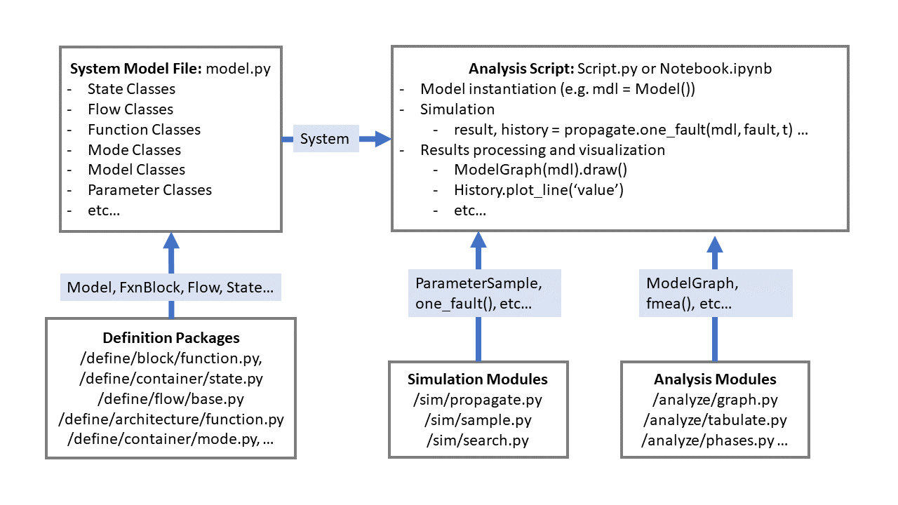
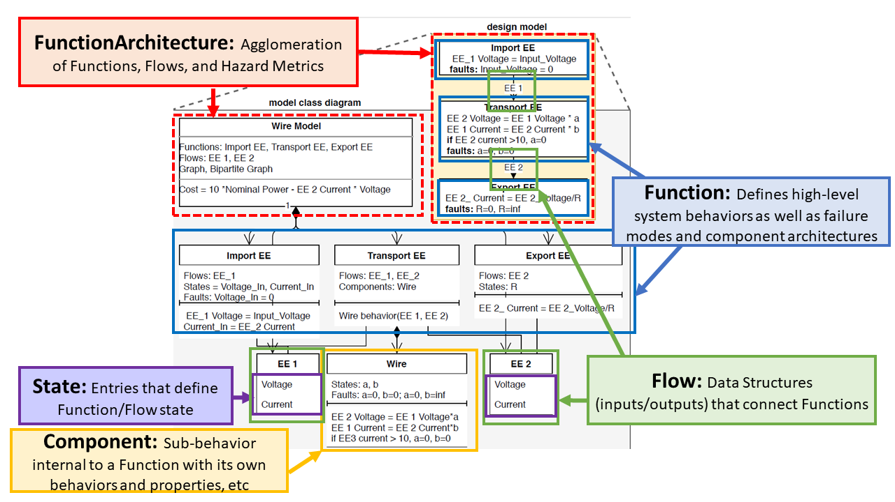
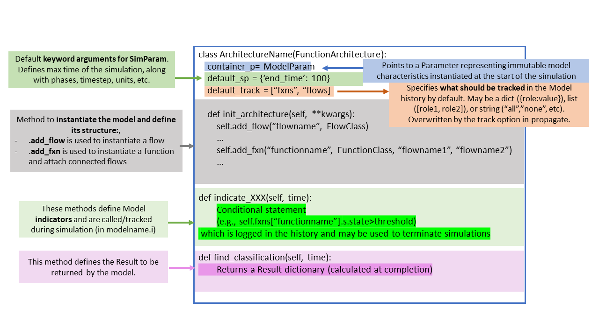

Intro to resilience modelling, simulation, and visualization in Python with fmdtools.
Version: 2.0-beta-1
Overview
Overview of fmdtools
Purpose
Project Structure
Common Classes/Functions
Basic Syntax
Coding Activity
Example model:
examples/pump/ex_pump.pyWorkbook:
examples/pump/Tutorial_unfilled.ipynbModel Instantiation
Simulation
Visualization/Analysis
Prerequisites
Ideally, some pre-existing Python and Git knowledge
Anaconda distribution
Ideally this is already set up!
Download/install from: https://www.anaconda.com/products/individual
A git interface
Github Desktop (graphical git environment)
git-scm (stand-alone CLI)
Motivation: Modelling System Resilience
Resilience means taking a dynamic understanding of risk and safety

Why is Resilience Important?

Enabling proactive design process

Especially relevant to new systems when we don’t have data
Why fmdtools? Possible Competitors:
Uncertainty Quantification tools: (e.g. OpenCossan)
Doesn’t incorporate fault modelling/propagation/visualization aspects
MATLAB/modelica/etc. Fault Simulation tools
Rely on pre-existing model/software stack–Useful, but often difficult to hack/extend (not open-source)
Safety Assessment tools: (e.g. Alyrica, Hip-Hops)
Focused on quantifying safety, not necessarily resilience
As a result, use different model formalisms!
Why fmdtools? Pros:
Highly Expressive, modular model representation.
faults from any component can propagate to any other connected component via undirected propagation
highly-extensible code-based behavior representation
class structure enables complex models representing human behavior and systems of systems
Research-oriented:
Written in/relies on the Python stack
Open source/free software
Enables design:
Models can be parameterized an optimized!
Plug-and-play analyses and visualizations
Why not fmdtools? Cons:
You already have a pre-existing system model
fmdtools models are built in fmdtools
if you have a simulink/modelica model, you may just want to use built-in tools
You want to use this in production
fmdtools is Class E Software and thus mainly suitable for research (or, at least, we don’t gaurantee it)
Somewhat dynamic development history
What is fmdtools? A Python package for design, simulation, and analysis of resilience.

What is fmdtools? Repo Structure
Repository (https://github.com/nasa/fmdtools/)
/fmdtools: installable package/examples: example models with demonstrative notebooks and tests/docs: resources for documentation/tests: stand-alone tests (and testing rigs)README.md: Basic package descriptionCONTRIBUTORS.md: Credit for contributionsrequirements.txt: List of requirements… and other configuration files
Activity: Download and Install fmdtools
repo link: https://github.com/nasa/fmdtools/
set up repo:
create
path/to/fmdtoolsfolder for repo(usually in
/documents/GitHub)
clone git into folder:
git clone https://github.com/nasa/fmdtools.gitcan also use webpage
package installation:
Open Python from anaconda (e.g., open Spyder)
Install with
pip install -e /path/to/fmdtools
Analysis Workflow/Structure

Defining a Model
What do we want out of a model?
What behaviors and how much fidelity do we need?
What functions/components and interactions make up the system?
Single function or multiple functions?
Is it controlled? Are there multiple agents?
What type of simulation do we want to run?
Single-timestep vs multi-timestep vs network
What scenarioss do we want to study and how?
Failure modes and faulty behaviors
Disturbances and changes in parameters
What are the possible effects of hazards and how bad are they?
By what metrics?
Defining a Model

Function Code Template

Model Code Template

Demo Model Activity: examples/pump/ex_pump.py
Notice the definitions and structure:
States:
WaterStates,EEStates,SignalStatesFlows:
Water,EE,SignalFunctions:
ImportEE,ImportWater,ExportWater,MoveWater,ImportSignalFlows
Modes (e.g.,
ImportEEMode,ImportSigMode)Mode probability model
Actual modes in
faultparamsentry
others attributes, e.g.,
Timer
Model:
Pumpconnects functions, flows, and definesend_classificationParameter:
PumpParamdefines values we can change in the simulation
More Resources for Model Definition
Note the docs for model definition in https://nasa.github.io/fmdtools/docs/fmdtools.define.html
Other examples also can be helpful: https://nasa.github.io/fmdtools/docs/Examples.html
Notebook Activity:
Open /examples/pump/Tutorial_unfilled.ipynb:
Instantiate the model
mdl = Pump()
Explore structure
Try different parameters!
Change things! What does the model directory look like?
dir(mdl)
Simulation Concepts: Static/Undirected Propagation
In a single timestep:
Functions with
static_behavior()methods simulate until behaviors converge (i.e., no new state values)Functions with
dynamic_behavior()run once in defined order
Simulation Concepts: Propagation over Time
Model increments (simulated + history updated) over each time-step until a defined final time-step or specified indicator returns true.
Simulation Concepts: Types of Simulations

For more info, (syntax/arguments), see documentation for fmdtools.sim.propagate
Simulation Concepts: Sampling Approaches
These classes define multi-run simulations which can be used to quantify uncertain performance/resiliences:
SampleApproach: Which faults to sample and when
Relies on mode information encoded in the model
Simulated using
propagate.approach()
NominalApproach: Nominal parameters or random seeds to sample
Can be simulated in
propagate.nominal_approach()Can be simulated in conjunction with faults using
propagate.nested_approach
See docs for: fmdtools.sim.approach
Simulation Concepts: Things to Consider
Static/Dynamic propagation: How function states propagate to each other in a single time-step and multiple time-steps
Undirected graph representation—states can effect all other connected states, and vice versa, in any order
Stochastic Propagation: Whether and how stochastic states are instantiated over time
e.g. do we run with the “default” values of parameters, or do we sample from a random number generator?
Breadth of Scenarios: How hazards are represented as discrete scenarios to simulate
What set of joint faults do we use? How many times are sampled?
Operational scenarios and joint operational/fault scenarios
Activity: Simulate the Model
Run fault propagation methods:
propagate.nominal()propagate.one_fault()propagate.approach()
What do the results look like? Explore data structures:
analyze.result.Resultanalyze.result.History
Explore:
What happens when you change
SampleApproachparameters?What happens when you change
Modelparameters?How do these methods compare in terms of computational time?
Analysis Modules

See docs for: fmdtools.analyze
Analysis Activity
Visualize the results:
Show model graph
Show nominal performances
Show performances in a nominal scenario
Make a scenario-based fmea
Explore:
How can you show only the parameters you want? Or change the formatting?
What does the behavior under other faults look like?
What other analyses can you perform with these results?
Conclusions/Summary
fmdtools is an environment for designing resilient systems
/defineenables model definition/simis used to define simulations/analyzeis used to analyze and visualize simulation results
I hope you agree that it has some powerful features!
Modelling expressiveness and clarity
Types of simulations that can be run
Powerful but easy-to-leverage plug-and-play analyses
Further Reading/Links
More advanced topics (see examples):
Search and optimization
Human/AI Modelling
Systems-of-Systems modeling
Modelling Stochastic Behavior
… and more
Model Development Guide: Has best practices for developing models in a strategic way (especially helpful for compelx models)
Overview Paper: